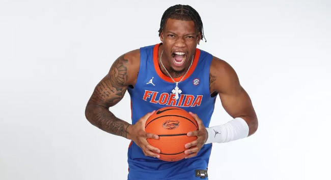
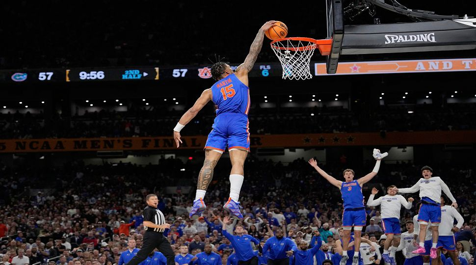

Alijah Martin
This is Alijah Martin. He was born on December 26th, 2001. Martin attended North Pike High School in Summit, Mississippi. Martin was a multi-sport athlete playing both football and basketball like some of his teammates. In his senior season he averaged 25.4 points, 8.7 rebounds, and 3.4 steals per game, before commiting to Florida Atlantic University. After playing three years at Florida Atlantic and helping them reach their first ever final four he decided to hit the transfer portal. Martin decided to commit to Florida after announcing in April 2024. He started as their shooting guard and helped the team win the national championship.
Some of Martin's accomplishments include :
- Third-team All-C-USA (2022)
- First-team All-C-USA (2023)
- C-USA tournament MVP(2024)
- Second-team All-AAC (2024)
- SEC Tournament Title (2025)
- NCAA Tournaments Title(2025)
Thank you Alijah Martin for your wonderful posters, I will remember them forever ❤️❤️